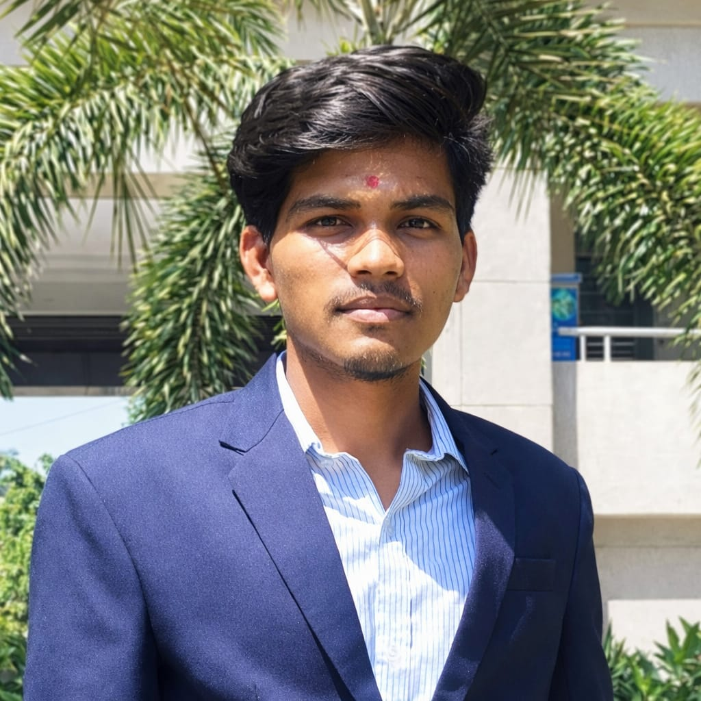

|
 Dhiraj RathodEngineering Student Contact📞 +919561368065 ✉ drathod@gmail.com 📍 kasaba bawada kolhapur LinksLinkedIn: linkedin.com/Dhiraj Twitter: twitter.com/Dhiraj Languages
Hobbies
|
ABOUT MEA dedicated engineering student with a passion for problem solving. Proven ability to apply theoretical knowledge in practical applications and contribute to innovative engineering projects. WORK EXPERIENCE
Engineering StudentDYPCET | 2024 - 2028
EDUCATION
Bachelor of Computer Science Engineering
D.Y.Patil College of Engineering and Technology SKILLS
|